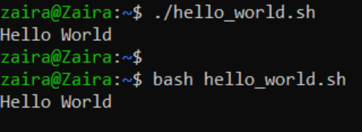
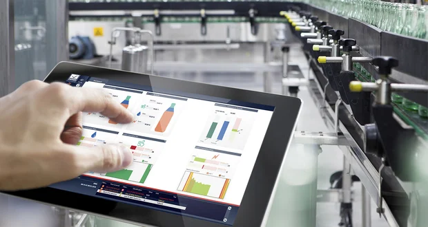

Con interfaccia, nell'informatica, si indica il punto di incontro o collegamento tra sistemi diversi e/o le modalità per permettere la loro interazione sotto forma di scambio di informazioni, quindi per far sì che due, o più utenti, comunichino e interagiscano tra loro. Sotto ci sono alcuni esempi di interfacce.
Una shell è un tipo di programma per computer che consente all'utente di controllare il sistema operativo tramite un'interfaccia a riga di comando (CLI) o un'interfaccia grafica (GUI). In sostanza, le shell sono modi diretti per comunicare al sistema operativo le azioni da eseguire, di solito attraverso l'automazione.
La Bash è la shell (ovvero l'interfaccia testuale) più diffusa e utilizzata in ambiente Linux. Linux discende da Unix, di conseguenza la shell bash prende spunto dalla sua omologa presente in quest'ultimo. Esistono svariate shell per Linux. Bash è un acronimo di bourne again shell che a sua volta è un gioco di parole a metà strada tra "shell rinata" e "un'altra shell Bourne" in riferimento a Stephen Bourne.
Per interfaccia uomo-macchina (HMI) si intende la funzione o il componente di un determinato dispositivo o di un'applicazione software che consente all'uomo di operare e interagire con le macchine. Le HMI utilizzate in ambito industriale sono per lo più schermi o touchscreen che collegano gli utenti a macchine, sistemi o dispositivi. In fabbrica, gli operatori utilizzano HMI per controllare e automatizzare i macchinari e le loro linee di produzione.
